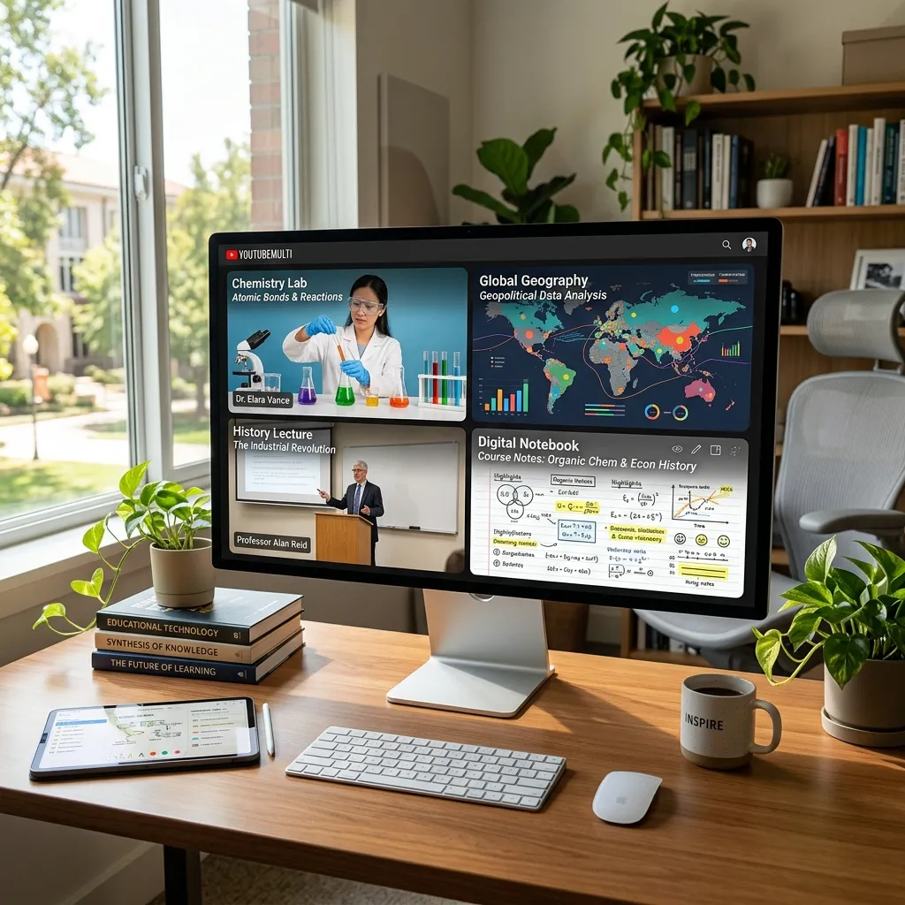

Multi-Screen Video Players in Education: Revolutionizing Modern Learning

Education in the 21st century is no longer a linear journey from page one to page one hundred. It is a complex, networked process of information synthesis. Students and researchers in 2026 find themselves at the intersection of a massive "Video Library" of human knowledge. To truly master a subject today, you must be able to view it from multiple angles, cross-examine experts, and compare contradictory theories in real-time. This is where educational video grids, powered by YoutubeMulti, are fundamentally changing the classroom experience.
The End of the "Single-Stream" Lecture
The traditional model of watching one lecture for an hour is increasingly being viewed as inefficient. Cognitive science suggests that "Comparative Learning"—the act of seeing two related concepts side-by-side—leads to significantly higher retention rates and deeper conceptual understanding. By using a YouTube multi-viewer, a student can load three different professors explaining the same complex physical law (e.g., Quantum Entanglement) and immediately spot the nuances in their explanations.
1. Comparative Learning: Seeing Multiple Perspectives
In fields like history, political science, or economics, there is rarely "one" answer. To understand a global event, a student should monitor multiple news agencies or historical analysts simultaneously. Loading a 2x2 grid with feeds from different cultural backgrounds allows for a "Spatial Logic" of learning. You aren't just hearing what happened; you are seeing the context of how it is being reported globally.
2. Skill-Building Grids: From Theory to Practice
For vocational and technical skills—coding, digital art, or complex laboratory procedures—multi-screen viewing is a massive productivity multiplier. A student can set up a "Skill-Building Grid" in YoutubeMulti with the following layout:
- Cell 1: The masterclass lecture (The "What").
- Cell 2: A first-person technical walkthrough (The "How").
- Cell 3: A case study or real-world application (The "Why").
- Cell 4: A "Pitfalls and Errors" video to avoid common mistakes.
This layout prevents the "Context Switching" fatigue that occurs when a student has to manually find and open new tabs every time they hit a roadblock in their practice.
3. Language Immersion and Translation Grids
Learning a new language is about more than just vocabulary; it's about rhythm and context. Advanced students use video grids to watch the same scene from a movie in three different languages, or to watch a speaker alongside a sign-language interpreter and a transcription feed. This "Multi-Sensory" approach accelerates the brain's ability to map new linguistic structures.
4. Research Synthesis: Managing the "Literature Review" of Video
For PhD candidates and professional researchers, the "Literature Review" increasingly involves reviewing hundreds of hours of recorded seminars, conference papers, and expert interviews. Doing this sequentially is a multi-month task. By using a 10x10 high-density grid in YoutubeMulti, a researcher can perform visual scanning across dozens of videos to identify key phrases, visual evidence, or specific participants. This high-velocity filtering allows them to "cut through the noise" and focus their deep-dive efforts only on the most relevant content.
5. Classroom Management for Educators: The Observer's Grid
The innovation isn't just for students. Educators in distance-learning environments use multi-screen players as a "Command Center." A teacher can monitor multiple group-discussion breakout rooms simultaneously, ensuring that all students are staying on task and providing immediate intervention where needed. This level of "Situational Awareness" was once the exclusive domain of physical classrooms, but it is now fully available in the digital space.
Technical Best Practices for Students
To maximize the educational value of a multi-stream setup, students should follow these guidelines:
- Note-Taking Synchronization: Use a side-bar note-taking app that timestamps your notes to the specific grid cell you are watching.
- Mute Strategy: Keep the primary lecture at full volume while keeping the "Supplementary" videos at 10-20% volume or muted, using them as visual reference points.
- Session Templates: Use YoutubeMulti's template feature to save your "Study Hubs." Have one for "Calculus Study Group" and another for "Spanish Immersion."
Cognitive Load and the "Flow State"
A common concern is that "Multi-tasking leads to distraction." However, in a structured educational grid, you aren't multi-tasking on *different* subjects; you are multi-viewing the *same* subject. This actually reduces cognitive load by providing the brain with all necessary context in one visual field, preventing the "Memory Decay" that happens when you switch between disconnected browser tabs.
Conclusion: The Future of Digital Education
The classroom of 2026 is not a room with four walls; it is a dashboard with infinite possibilities. By embracing tools like YoutubeMulti, students are no longer passive recipients of a single stream of information. They are active architects of their own learning environment. The future of education belongs to those who can synthesize information from a multi-dimensional world.